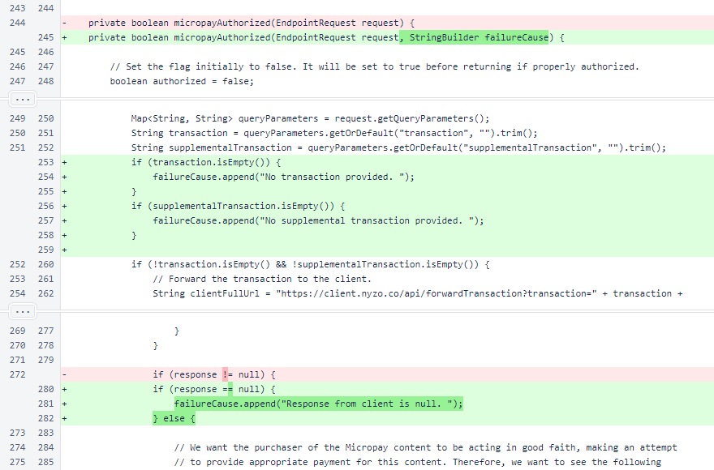
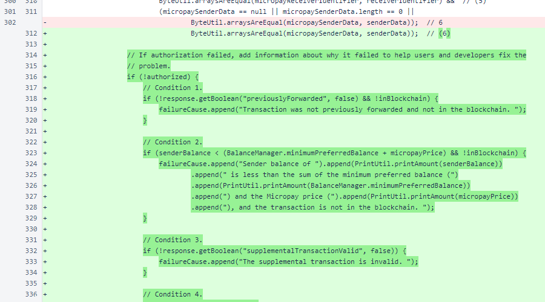
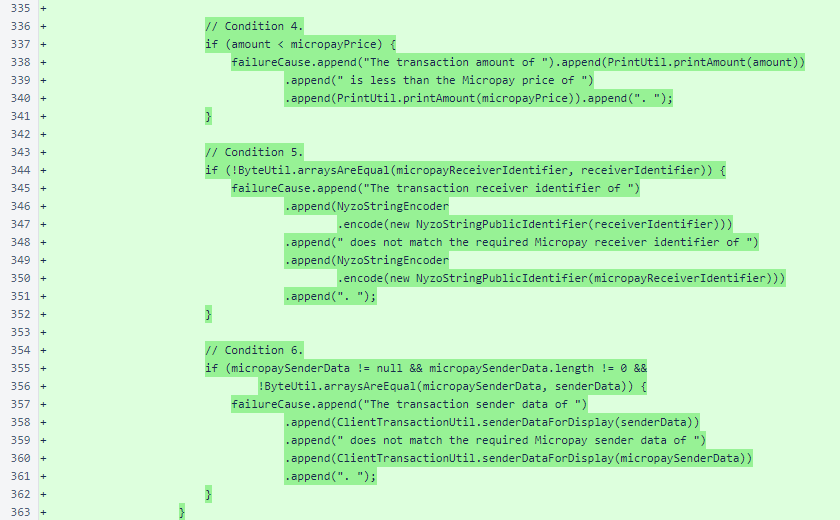
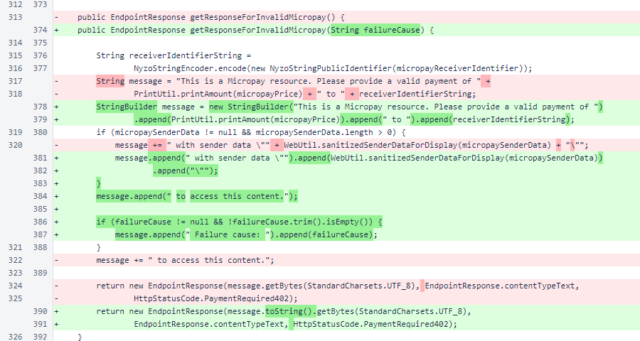

Nyzo version 629 (commit on GitHub) adds detailed feedback from the documentation server when a Micropay transaction is not accepted.
This version affects the documentation server.
The documentation server provides a reference implementation of Micropay content delivery. Addition of .micropay files alongside content prevents the content from being delivered without payment.
The documentation server applies a 6-factor test before delivering content. If a request for Micropay content fails, the server now provides human-readable feedback in the 402 (Payment Required) response letting the client know why the content was not delivered.
All changes in this version are in the Documentation
The micropay
A message is also provided letting the user know if the failure is due to no response from the client. Such an error would let an end user know that a failure might be temporary, or it might let the operator of a web server know that the selected Nyzo client is unreliable and a different Nyzo client should be used.
If the 6-factor test fails, each condition is examined again. Detailed error messages are provided explaining each failed case.
To provide more helpful feedback, all six conditions are examined, even if earlier conditions fail. This allows a user to see all issues that must be corrected instead of only seeing the first issue that triggered the failure.
The failure cause is now included in the 402 (Payment Required) response that is generated when Micropay authorization fails.
